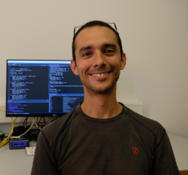
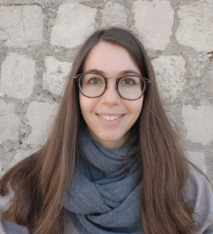
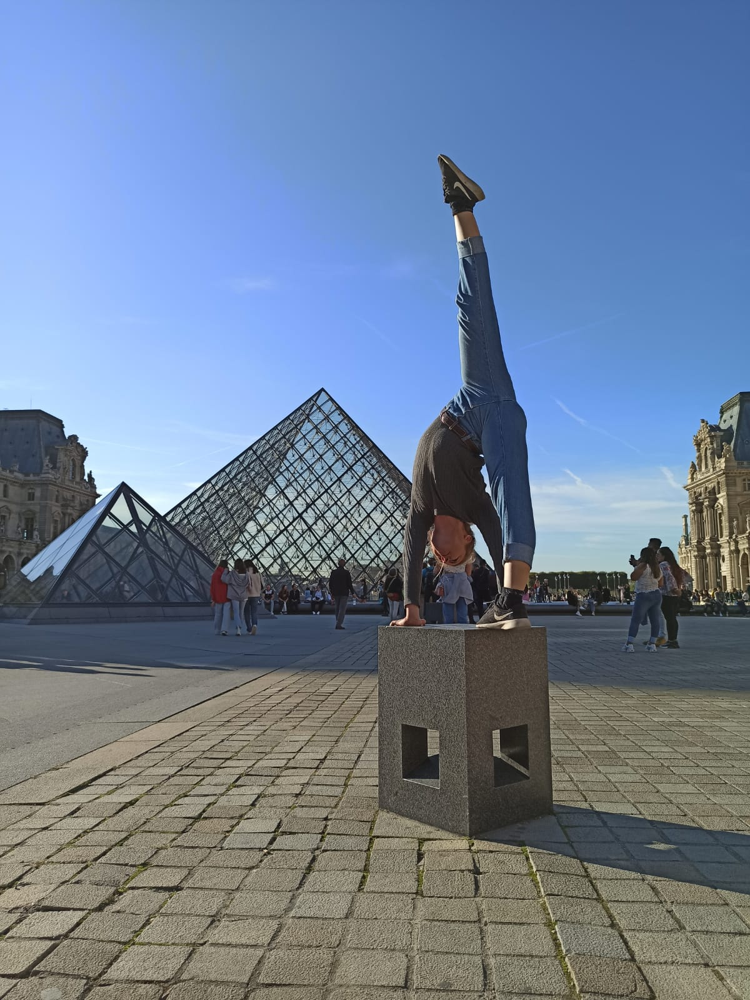
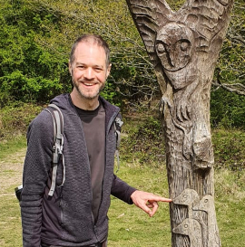
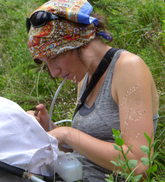
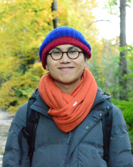
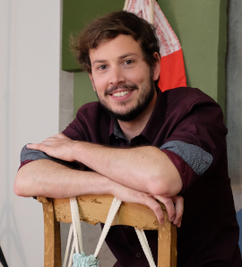
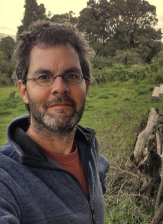
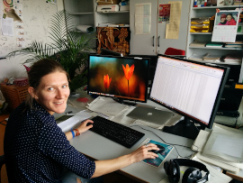
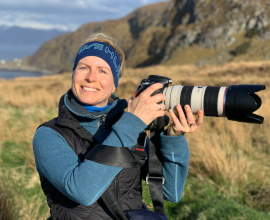

Current members
Alexandre Courtiol 🇫🇷
 Member and boss of the DZG since 2012. , . Senior researcher, lecturer. Initially trained as an evolutionary biologist with an additional emphasis on applied statistics, Alex has adopted ecology and demography after his PhD. He is mostly interested in humans, wild mammals and birds. His favorite research projects are those revealing unexpected outcomes. His focus is on questions related to life history and behaviour, but he is always open to new exciting collaborations. He likes programming and teaching R.
Liam Bailey 🇦🇺
 Member since 2018. .
Liam is a postdoc interested in understanding how ecosystems are affected by and respond to environmental change, particularly in the context of climate change. His research often involves long-term demographic datasets, and he loves using R and his experience as a data scientist to work with these data and answer scientific questions. While he started his research with birds, Liam has now branched out to include research with wild mammals. He also enjoys data visualization and teaching others how to visually communicate their ideas and scientific findings.
Member since 2018. .
Liam is a postdoc interested in understanding how ecosystems are affected by and respond to environmental change, particularly in the context of climate change. His research often involves long-term demographic datasets, and he loves using R and his experience as a data scientist to work with these data and answer scientific questions. While he started his research with birds, Liam has now branched out to include research with wild mammals. He also enjoys data visualization and teaching others how to visually communicate their ideas and scientific findings.
Leonie Walter 🇩🇪
 Member since October 2022.
After discovering her weird (yet unrequited) love towards stats and data science, Leonie joined the team for an internship during her Master in biology. She is planing to find out how mate choice impacts the distribution of relatedness in our favourite population of spotted hyenas. She may also use individual-based simulations to look at the consequences of inbreeding onto genetic diversity.
Member since October 2022.
After discovering her weird (yet unrequited) love towards stats and data science, Leonie joined the team for an internship during her Master in biology. She is planing to find out how mate choice impacts the distribution of relatedness in our favourite population of spotted hyenas. She may also use individual-based simulations to look at the consequences of inbreeding onto genetic diversity.
Alexis Verfaillie 🇫🇷
 Member since January 2023.
Alexis is a French master student interested in all kinds of cats. He is with us to study the inclusive fitness consequences of “coups” (unexpected changes occurring in social hierarchy) in… spotted hyenas. This animal is not a cat, but we convinced him it is close enough since hyenas belong to the suborder Feliformia. Like all of us, Alexis’ main pet won’t be a hyena however, nor a cat, not even a mouse, but rather a keyboard. That said, since what is his doing is computationally intensive he may even end up using purrr & furrr which should definitely meet his expectations.
Member since January 2023.
Alexis is a French master student interested in all kinds of cats. He is with us to study the inclusive fitness consequences of “coups” (unexpected changes occurring in social hierarchy) in… spotted hyenas. This animal is not a cat, but we convinced him it is close enough since hyenas belong to the suborder Feliformia. Like all of us, Alexis’ main pet won’t be a hyena however, nor a cat, not even a mouse, but rather a keyboard. That said, since what is his doing is computationally intensive he may even end up using purrr & furrr which should definitely meet his expectations.
Former members
Colin Vullioud 🇨🇭
 Member 2017-2021.
Colin came to us after getting fed up with social science research, learned R with us, and turned social behavior into algorithms.
He also created the R package {torpor} and contributed to {hyenaR}.
He left the DZG as a fully fledged data scientist currently working as a freelancer in Berlin, Germany.
He is also an artist who has started to include R in his projects.
Member 2017-2021.
Colin came to us after getting fed up with social science research, learned R with us, and turned social behavior into algorithms.
He also created the R package {torpor} and contributed to {hyenaR}.
He left the DZG as a fully fledged data scientist currently working as a freelancer in Berlin, Germany.
He is also an artist who has started to include R in his projects.
Elisa Donati 🇮🇹
 Member 2020. Elisa came to program virtual hyenas and to work on our R package {hyenaR}. She did this between a master’s thesis on lizards and a research project that involved setting up a complex simulation platform so as to model the coastal ecosystem of Venice, with a view to allowing sustainable exploitation by humans. She now continues modelling coastal ecosystems, this time as a PhD student in Trieste, Italy.
Louise Chevalier 🇫🇷
 Member 2019. Louise came for a few months during her PhD to do something else for a while. She worked with us on adding genetics to a simulation model about hyenas. Then, she returned to her PhD – building fancy demo-genetics models to better understand the role of demography and genomic constraints on the evolution of mate choice. She is now a circus artist in France.
Ian Rickard 🇬🇧
 Member 2017-2018. Ian came for a sabbatical from Durham University to study how twinning connects to fertility in humans, then switched career to become a data scientist for the ministry of justice in the UK. Ian and Alex were both postdocs in the same team in Sheffield (UK) headed by our collaborator Virpi Lummaa.
Robert Schwieger 🇩🇪
 Member 2015-2016.
Robert came to do maths on inference problems about mate choice before doing a PhD in applied mathematics on gene regulatory networks.
He is now working at CENTOGENE in Berlin, Germany.
Member 2015-2016.
Robert came to do maths on inference problems about mate choice before doing a PhD in applied mathematics on gene regulatory networks.
He is now working at CENTOGENE in Berlin, Germany.
Camille Martinez Almoyna 🇫🇷
 Member 2015-2016. Camille did a joint internship here and in Montpellier developing stats methods to draw inferences using simulations. She then applied her statistics skills during her master’s project and PhD to study interactions in soil between plants and other lifeforms, across alpine elevation gradients. She is currently doing a postdoc in Grenoble, France.
Loïc Etienne 🇫🇷
 Member 2012-2014.
Loïc did his PhD with us, modelling the evolution of mutual mate choice.
He was co-supervised by Alex, our long standing collaborator François Rousset, and Bernard Godelle.
After his PhD, Loïc worked as a high-school teacher, and he is now a full time musician in France.
Member 2012-2014.
Loïc did his PhD with us, modelling the evolution of mutual mate choice.
He was co-supervised by Alex, our long standing collaborator François Rousset, and Bernard Godelle.
After his PhD, Loïc worked as a high-school teacher, and he is now a full time musician in France.
Friends
Not quite members, not quite collaborators, but very close to us all the same!
Jörns Fickel 🇩🇪
 Jörns Fickel is the wise Sensei in charge of the IZW Department of Evolutionary Genetics to which we belong.
He is also leading the course on conservation genetics to which we contribute.
We are delighted that he has our back, and effectively defend our interests within the IZW and beyond.
Jörns Fickel is the wise Sensei in charge of the IZW Department of Evolutionary Genetics to which we belong.
He is also leading the course on conservation genetics to which we contribute.
We are delighted that he has our back, and effectively defend our interests within the IZW and beyond.
Ilja Heckmann 🇰🇿🇩🇪
Ilja is a biologist colleague turned full time python programmer and Linux admin from whom we never stop learning.
Zimai Li 🇨🇳
 Zimai worked with us on our R package {hyenaR} while doing an internship with colleagues from the hyena project on mate choice in spotted hyenas. After his stay with us, he joined Yuko Ulrich to study interactions between infections and behaviour in clonal raider ants.
Matthias Gallipaud 🇫🇷
 Matthias is a long standing idea bouncer for the DZG. He did his PhD with François Xavier Dechaume-Moncharmont who was in Dijon at the time (now in Lyon) and then a postdoc with Hanna Kokko in Zurich, Switzerland. Matthias stayed in Zurich and is currently a data scientist working for UrbanDataLab, a startup specialising in GIS and spatial analyses. He also does statistical consulting, on the side, as a freelancer.
Main collaborators
François Rousset 🇫🇷
 François is a theoretical biologist at the Institut des Sciences de l’Evolution in Montpellier, France, turned hardcore statistician, author of R package {spaMM} without which we could not do half the work we do.
François is a theoretical biologist at the Institut des Sciences de l’Evolution in Montpellier, France, turned hardcore statistician, author of R package {spaMM} without which we could not do half the work we do.
Oliver Höner 🇨🇭🇧🇷
 Oliver is the leader of the hyena project. He’s a behavioral ecologist and field biologist who turns anything hyena related into high quality datasets. Oliver is based in the department of Evolutionary Ecology at the IZW. We also collaborate intensively with Oliver’s student(s) – currently Arjun Dheer – and with other members of the project, especially co-leader Eve Davidian.
Viktoriia Radchuk 🇺🇦
 Viktoriia is an individual-based modeler and the producer of big collaborative meta-analyses. Like us she flourishes at the interface between field and theory. She is a key member of the department of Ecological Dynamics at the IZW.
Stephanie Kramer-Schadt 🇩🇪
 Stephanie is head of the excellent department Ecological Dynamics at the IZW which is composed, almost exclusively, of great young scientists and students with strong quantitative skills.
Kseniia Kravchenko 🇺🇦
 Kseniia has freshly finished her PhD at the BatLab from the IZW.
She is a batwomen with whom we try to predict the future distribution of hibernation niches by combining physiology and climate change.
Kseniia has freshly finished her PhD at the BatLab from the IZW.
She is a batwomen with whom we try to predict the future distribution of hibernation niches by combining physiology and climate change.
Christian Voigt 🇩🇪
 Christian is head of the department of Evolutionary Ecology at the IZW and head of the BatLab. His large team studies the ecophysiology of bats, as well as various topics relevant for the conservation of bats, such as their migration.
Christian is head of the department of Evolutionary Ecology at the IZW and head of the BatLab. His large team studies the ecophysiology of bats, as well as various topics relevant for the conservation of bats, such as their migration.
Virpi Lummaa 🇫🇮
Virpi is the life history data queen who has produced two of the very best demographic datasets that exist (one on pre-industrial humans and one on Asian Elephants). She is head of the human life history science group and of the Myanmar Timber Elephant Project at the University of Turku in Finland.
Collaborators wishlist
They never worked with us, but are very much like us, so we hope to work with them one day: Sarah Cubaynes 🇫🇷, Olivier Gimenez 🇫🇷, Samuel Pavard 🇫🇷, François Xavier Dechaume-Moncharmont 🇫🇷. There is also Erik Postma 🇳🇱 with whom we worked a little already, but we would love to do more with him.